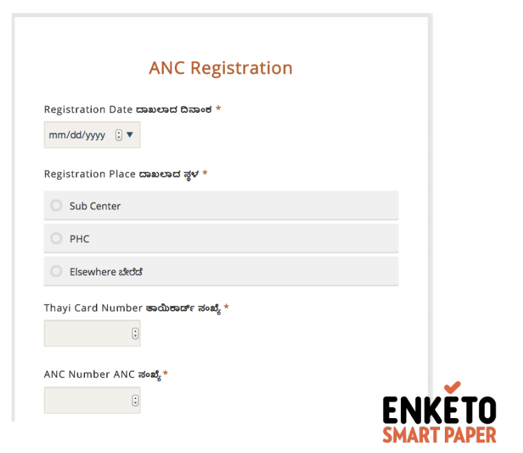

Client management features promote continuity of care across life stages by ensuring clients receive the complete package of health services with automated scheduling and showing reminders for follow-up visits and required services. These features enable health workers to see a holistic view of their clients and easily manage client records.
With paper registers, client lists are static, which makes client lookups difficult. For frontline health workers, who often go door to door to provide health checkups, it would be useful to have a way to dynamically filter, sort, and search for clients based on her movements through her community or catchment area.
OpenSRP has a customizable array of dynamic sort and filter options to rearrange and filter down lists of clients to better match a health worker’s immediate work needs. Once time-consuming tasks such as looking up clients by family planning method becomes effortless.


OpenSRP uses Enketo webforms and native Android forms for data entry. Forms are launched directly from the smart registers at the tap of a button and allow for offline data entry in areas where a network connection is not always available. Data submitted in the form instantly updates the client's record in the digital register without requiring a sync with the server. Data is safely stored offline until the device has a network connection and the data is submitted to the server.
Web and native Android forms are the next evolution of electronic forms, as they allow the user to enter data in a non-linear and less restrictive format, which is a critical factor for user uptake and satisfaction. Skip logic becomes visible, allowing the health worker to see data fields expand or collapse based on their input. Teams can author their forms using the XLSForm standard, which allows users to have the control they need in their forms to ensure high data quality and fidelity.
